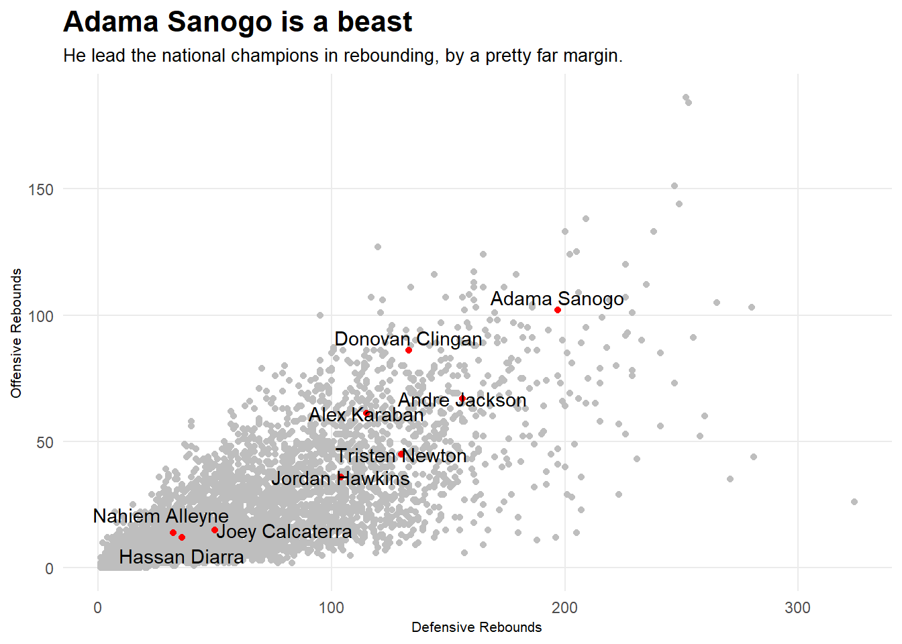
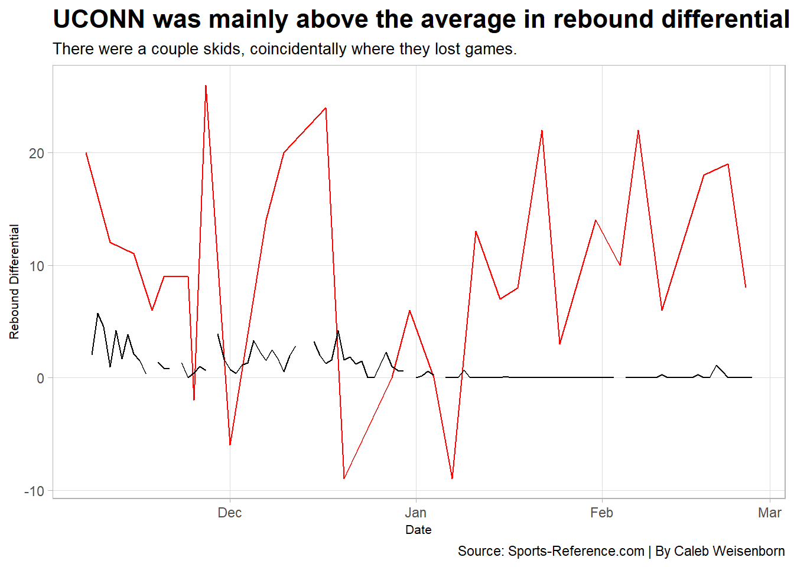

Code
library(tidyverse)
library(ggbump)
library(ggrepel)
library(cowplot)
library(ggalt)
library(cowplot)The Connecticut Huskies Men’s basketball team was dominant in March Madness, and some would argue all year. The Huskies started the season 14-0, steamrolling most of their opponents. I first saw this team when they were playing in the Phil Knight Invitational.
Immediately, I noticed the size, strength, and athleticism that this team had. They had a couple guys who were over 6’10”, and their guards were jumping over centers to grab rebounds.
I followed this team for the rest of the season and knew they would make a deep run in the tournament. I won’t go out and say I knew they would win the championship because well, that’s impossible, especially in March Madness. The Huskies did however go on to win the championship, and their rebounding was an enormous factor of their success.
library(tidyverse)
library(ggbump)
library(ggrepel)
library(cowplot)
library(ggalt)
library(cowplot)totals <- read_csv("data/cbbtotals3.csv")totals2 <- totals %>%
group_by(School) %>%
summarize(
TotalDefReb = (TRB - ORB),
TotalOffReb = ORB ,
TotalReb = TRB
) %>%
mutate(
OffReb = TotalOffReb,
DefReb = TotalDefReb ,
TotReb = TotalReb
)
topoff <- totals2 %>% top_n(10,wt=OffReb)
topdef <- totals2 %>% top_n(10,wt=DefReb)
toptot <- totals2 %>% top_n(10,wt=TotReb)bar1 <- ggplot() +
geom_bar(data=topoff, aes(x=reorder(School, OffReb), weight=OffReb)) +
coord_flip()
bar2 <- ggplot() +
geom_bar(data=topdef, aes(x=reorder(School, DefReb), weight=DefReb)) +
coord_flip()
bar3 <- ggplot() +
geom_bar(data=toptot, aes(x=reorder(School, TotReb), weight=TotReb)) +
coord_flip()conn <- totals2 %>% filter(School == "Connecticut")
bar1 <- ggplot() +
geom_bar(data=topoff, aes(x=reorder(School, OffReb), weight=OffReb), fill="grey") +
geom_bar(data=conn, aes(x=reorder(School, OffReb), weight=OffReb), fill="#000E2F") +
coord_flip() +
labs(title="UCONN was elite at offensive rebounding...", subtitle = "They finished 2nd in the country in offensive rebounds.", x="", y="Total Offensive Rebounds", caption = "") +
theme_minimal() +
theme(
plot.title = element_text(size = 10, face = "bold"),
axis.title = element_text(size = 8),
plot.subtitle = element_text(size=10),
panel.grid.minor = element_blank(),
plot.title.position = "plot"
)
bar2 <- ggplot() +
geom_bar(data=topdef, aes(x=reorder(School, DefReb), weight=DefReb), fill="grey") +
geom_bar(data=conn, aes(x=reorder(School, DefReb), weight=DefReb), fill="#000E2F") +
coord_flip() +
labs(title = "...and they did well on the defensive glass too.", subtitle= "7th in the country, which isn't bad at all.", x="", y="Total Defensive Rebounds") +
theme_minimal() +
theme(
plot.title = element_text(size = 10, face = "bold"),
axis.title = element_text(size = 8),
plot.subtitle = element_text(size=10),
panel.grid.minor = element_blank(),
plot.title.position = "plot"
)
bar3 <- ggplot() +
geom_bar(data=toptot, aes(x=reorder(School, TotReb), weight=TotReb), fill="grey") +
geom_bar(data=conn, aes(x=reorder(School, TotReb), weight=TotReb), fill="#000E2F") +
coord_flip()+
labs(title = "",
subtitle= "",
x="", y=" Total Rebounds",
caption="Source: Sports Reference | By Caleb Weisenborn") +
theme_minimal() +
theme(
plot.title = element_text(size = 16, face = "bold"),
axis.title = element_text(size = 8),
plot.subtitle = element_text(size=10),
panel.grid.minor = element_blank(),
plot.title.position = "plot"
)
plot_grid(bar1, bar2, bar3)
#| message: false
#| warning: false
ggsave("image.png")Saving 7 x 5 in imageAs you can see, UCONN was incredible at rebounding the ball. What is intriguing about this data is that offensive rebounds are more difficult to grab then defensive rebounds, but yet UCONN ranked higher offensively than defensively.
I mentioned earlier the size, strength, and athleticism of the Huskies. Players such as Adama Sanogo, Alek Karaban, and Donovan Clingan resembled the Monstars from the movie Space Jam. Tristen Newton, Jordan Hawkins, and Andre Jackson were all tall, lengthy, athletic guards who helped on long rebounds.
This begs the question of, who was the most dominant rebounder of the national champions?
players <- read_csv("data/players23.csv") %>%
filter(MP > 50 & TRB > 0)connp <- players %>% filter(Team == "UConn Huskies Men's")
as <- connp %>% filter(Player == "Adama Sanogo")
jw <- connp %>% filter(Player == "Jordan Hawkins")
tn <- connp %>% filter(Player == "Tristen Newton")
ak <- connp %>% filter(Player == "Alex Karaban")
dc <- connp %>% filter(Player == "Donovan Clingan")
aj <- connp %>% filter(Player == "Andre Jackson")
jc <- connp %>% filter(Player == "Joey Calcaterra")
na <- connp %>% filter(Player == "Nahiem Alleyne")
hd <- connp %>% filter(Player == "Hassan Diarra")
ggplot() +
geom_point(data=players, aes(x=DRB, y=ORB), color="grey") +
geom_point(data=connp, aes(x=DRB, y=ORB ), color="red") +
geom_text(data=as, aes(x=DRB, y=ORB+5 , label=Player)) +
geom_text(data=jw, aes(x=DRB, y=ORB , label=Player)) +
geom_text(data=tn, aes(x=DRB, y=ORB , label=Player)) +
geom_text(data=dc, aes(x=DRB, y=ORB+5 , label=Player)) +
geom_text(data=aj, aes(x=DRB, y=ORB , label=Player)) +
geom_text(data=ak, aes(x=DRB, y=ORB , label=Player)) +
geom_text(data=jc, aes(x=DRB+30, y=ORB , label=Player)) +
geom_text(data=na, aes(x=DRB-5, y=ORB+7 , label=Player)) +
geom_text(data=hd, aes(x=DRB, y=ORB-7 , label=Player)) +
labs(title="Adama Sanogo is a beast", subtitle="He lead the national champions in rebounding, by a pretty far margin.", x="Defensive Rebounds", y="Offensive Rebounds") +
theme_minimal() +
theme(
plot.title = element_text(size = 16, face = "bold"),
axis.title = element_text(size = 8),
plot.subtitle = element_text(size=10),
panel.grid.minor = element_blank()
)
Adama Sanogo is the shortest of the three big men from Connecticut, but yet led the team in offensive and defensive rebounds. Sanogo was elite at boxing out, and breaking his opponents box outs, largely due to his 246 pound frame.
You would expect the individual numbers to pop off the page considering as a team they were top 3 in the country in total rebounds. However, the rebound counts are relatively spread out, meaning that were just all around a good rebounding team.
With these rebound numbers, you gain 2nd chance opportunities for points and limit 2nd chance opportunities for opponents. Usually if you win the rebound battle, you have a pretty good chance at winning the game. Let’s take a look at how the Huskies did vs their opponents as far as rebounds.
logs <- read_csv("data/logs23.csv")difflogs <- logs %>%
mutate(Differential = TeamTotalRebounds - OpponentTotalRebounds) %>%
group_by(TeamFull) %>%
mutate(CumDiff = cumsum(Differential))
uconn <- difflogs %>% filter(TeamFull== "UConn Huskies Men's")
average <- difflogs %>% group_by(Date) %>% summarise(meandiff=mean(Differential))ggplot() +
geom_line(data=uconn, aes(x=Date, y=Differential, group=TeamFull), color="red") +
geom_line(data=average, aes(x=Date, y=meandiff), color="black") +
labs(
x="Date",
y="Rebound Differential",
title="UCONN was mainly above the average in rebound differential",
subtitle="There were a couple skids, coincidentally where they lost games.",
caption="Source: Sports-Reference.com | By Caleb Weisenborn"
) +
theme_light() +
theme(
plot.title = element_text(size = 16, face = "bold"),
axis.title = element_text(size = 8),
plot.subtitle = element_text(size = 10),
panel.grid.minor = element_blank()
)Warning: Removed 1 row containing missing values (`geom_line()`).
The Huskies dipped below the average a couple times but mainly stayed above it. What is important is they turned it on at the perfect time. In March Madness, the Huskies out-rebounded all of their opponents.
Funny enough, the dips in rebounding were the worst parts of their season. The Huskies did not lose a game until December 31st. In January, they lost 4 games, to some pretty suspect teams. None of this matters at the end of the day as the Huskies hoisted the national championship at the end of the season.
The scariest part about the Huskies is they only have 3 seniors. Don’t be surprised if we see the Huskies go back-to-back next year.